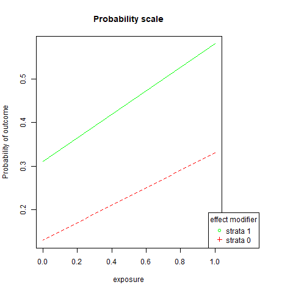
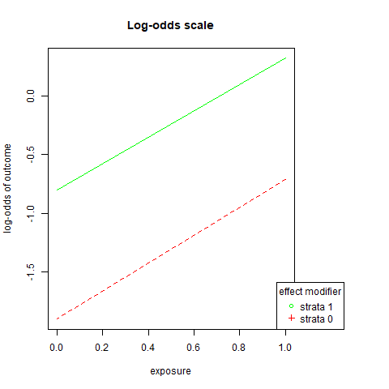
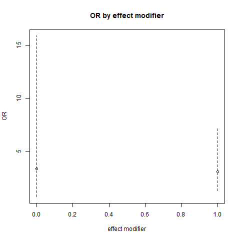

Chapter 3 Effect modification
- Multiplicative odds ratio scale are very popular for examining effect modification.
- However, often multiplicative scale is not helpful for public health related interpretations, and is considered as inadequate for such assessment.
- Additive probability scale should be additionally used for such assessment.
We will discuss the assessment of effect modification using one example data, and show how we can calculate the measures using R or calculate them by hand.
3.1 Estimates from Tabulation
require(interactionR)
data(OCdata)
outcome = "oc"
ex = "alc"
dataset = OCdataNow we will be working with stratified data (stratification by levels of effect modifier)
3.1.1 First strata: Smoking = 1
str = "smk"
str.lab = 1
dataset1 <- dataset[dataset[[str]] == str.lab,]
M <- table(dataset1[[ex]], dataset1[[outcome]])
M3 <- matrix(c(M[2,2],M[2,1],M[1,2],M[1,1]),
nrow = 2,
byrow = TRUE)
res1 <- epi.2by2(dat = M3,
method = "cross.sectional",
conf.level = 0.95,
units = 1,
interpret = FALSE,
outcome = "as.columns")
res1## Outcome + Outcome - Total Prevalence *
## Exposed + 225 166 391 0.58 (0.52 to 0.62)
## Exposed - 8 18 26 0.31 (0.14 to 0.52)
## Total 233 184 417 0.56 (0.51 to 0.61)
##
## Point estimates and 95% CIs:
## -------------------------------------------------------------------
## Prevalence ratio 1.87 (1.04, 3.35)
## Odds ratio 3.05 (1.29, 7.18)
## Attrib prevalence in the exposed * 0.27 (0.08, 0.45)
## Attrib fraction in the exposed (%) 46.53 (4.23, 70.15)
## Attrib prevalence in the population * 0.25 (0.07, 0.43)
## Attrib fraction in the population (%) 44.93 (3.31, 68.64)
## -------------------------------------------------------------------
## Uncorrected chi2 test that OR = 1: chi2(1) = 7.089 Pr>chi2 = 0.008
## Fisher exact test that OR = 1: Pr>chi2 = 0.013
## Wald confidence limits
## CI: confidence interval
## * Outcomes per population unitCheck the results yourself
p1.s1 <- as.numeric(strsplit(as.character(res1$tab$` Prevalence *`), " ")[[1]][1])
p0.s1 <- as.numeric(strsplit(as.character(res1$tab$` Prevalence *`), " ")[[2]][1])
RR.s1 <- p1.s1/p0.s1
RR.s1## [1] 1.870968RD.s1 <- p1.s1 - p0.s1
RD.s1## [1] 0.27OR.s1a <- (p1.s1/(1-p1.s1))
OR.s1b <- (p0.s1/(1-p0.s1))
OR.s1 <- OR.s1a/OR.s1b
OR.s1## [1] 3.0737333.1.2 second strata: : Smoking = 0
str.lab = 0
dataset1 <- dataset[dataset[[str]] == str.lab,]
M <- table(dataset1[[ex]], dataset1[[outcome]])
M3 <- matrix(c(M[2,2],M[2,1],M[1,2],M[1,1]),
nrow = 2, byrow = TRUE)
res0 <- epi.2by2(dat = M3,
method = "cross.sectional",
conf.level = 0.95,
units = 1,
interpret = FALSE,
outcome = "as.columns")
res0## Outcome + Outcome - Total Prevalence *
## Exposed + 6 12 18 0.33 (0.13 to 0.59)
## Exposed - 3 20 23 0.13 (0.03 to 0.34)
## Total 9 32 41 0.22 (0.11 to 0.38)
##
## Point estimates and 95% CIs:
## -------------------------------------------------------------------
## Prevalence ratio 2.56 (0.74, 8.84)
## Odds ratio 3.33 (0.70, 15.86)
## Attrib prevalence in the exposed * 0.20 (-0.05, 0.46)
## Attrib fraction in the exposed (%) 60.87 (-35.37, 88.69)
## Attrib prevalence in the population * 0.09 (-0.10, 0.28)
## Attrib fraction in the population (%) 40.58 (-37.53, 74.33)
## -------------------------------------------------------------------
## Yates corrected chi2 test that OR = 1: chi2(1) = 1.387 Pr>chi2 = 0.239
## Fisher exact test that OR = 1: Pr>chi2 = 0.147
## Wald confidence limits
## CI: confidence interval
## * Outcomes per population unitCheck the results yourself
p1.s0 <- as.numeric(strsplit(as.character(res0$tab$` Prevalence *`), " ")[[1]][1])
p0.s0 <- as.numeric(strsplit(as.character(res0$tab$` Prevalence *`), " ")[[2]][1])
RR.s0 <- p1.s0/p0.s0
RR.s0## [1] 2.538462RD.s0 <- p1.s0 - p0.s0
RD.s0## [1] 0.2OR.s0a <- (p1.s0/(1-p1.s0))
OR.s0b <- (p0.s0/(1-p0.s0))
OR.s0 <- OR.s0a/OR.s0b
OR.s0## [1] 3.2962113.1.3 Does effect modification exist?
OR: 3.0737327 vs. 3.2962113
Ratio of the OR in two groups (null value = 1)
OR.s1 / OR.s0## [1] 0.9325048RD: 0.27 vs. 0.2
Difference of the RD in two groups (null value = 0). This is also known as interaction contrast (IC)
RD.s1 - RD.s0## [1] 0.07RR: 1.8709677 vs. 2.5384615
Ratio of the RR in two groups (null value = 1)
RR.s1 / RR.s0## [1] 0.7370479Are they equivalent in both stratified groups?
3.1.3.1 Are the lines parallel?
We can utilize the probability and log-odds calculated before to plot these lines:
png('images/pem.png')
par(mar=c(5.1, 4.1, 4.1, 8.1), xpd=TRUE)
plot(c(1,0),c(p1.s1,p0.s1),
ylim = range(c(p1.s1,p1.s0, p0.s1,p0.s0)),
xlim=c(0,1),
xlab = "exposure",
ylab = "Probability of outcome",
lty = 1,
col = "green",
type = "l",
main = "Probability scale")
lines(c(1,0),c(p1.s0,p0.s0),
lty = 2,
col = "red")
legend("bottomright",
inset=c(-0.2,0),
legend=c("strata 1","strata 0"),
pch=c(1,3),
title="effect modifier",
col = c("green", "red"))
dev.off()## png
## 2
png('images/loem.png')
par(mar=c(5.1, 4.1, 4.1, 8.1), xpd=TRUE)
plot(c(1,0),c(log(OR.s1a), log(OR.s1b)),
ylim = range(c(log(OR.s1a), log(OR.s0a),log(OR.s1b),log(OR.s0b))),
xlim=c(0,1), xlab = "exposure",
ylab = "log-odds of outcome",
lty = 1,
col = "green",
type = "l",
main = "Log-odds scale")
lines(c(1,0),c(log(OR.s0a),log(OR.s0b)),
lty = 2,
col = "red")
legend("bottomright", inset=c(-0.2,0),
legend=c("strata 1","strata 0"),
pch=c(1,3),
title="effect modifier",
col = c("green", "red"))
dev.off()## png
## 2
3.2 Estimates from Regression
- Add interaction term in the regression
- check the coef of the interaction terms, and compare that number with the numbers calculated at the previous section (rations and differences): they should be equivalent if not equal
Using regression could help accommodate the following
- covariates could be added
- exposure variable could be continuous covariate
3.2.1 OR: multiplicative scale
OCdata$alc <- as.factor(OCdata$alc)
OCdata$smk <- as.factor(OCdata$smk)
reg1 = glm(oc~alc*smk,
family = binomial(link = 'logit'),
data = OCdata)
require(jtools)
reg.res1 <- summ(reg1, exp = TRUE)
reg.res1$coeftable## exp(Est.) 2.5% 97.5% z val. p
## (Intercept) 0.1500000 0.04457383 0.5047805 -3.06413033 0.002183038
## alc1 3.3333333 0.70060657 15.8592734 1.51286779 0.130313246
## smk1 2.9629630 0.68004588 12.9096430 1.44647020 0.148045366
## alc1:smk1 0.9149096 0.15436110 5.4227369 -0.09794692 0.921974441P-values are used to determine significance of the interaction term.
Let us estimate the ORs by effect modifier
require(Publish)
saveres <- publish(reg1)## Variable Units OddsRatio CI.95 p-value
## alc(0): smk(1 vs 0) 2.96 [0.68;12.91] 0.14805
## alc(1): smk(1 vs 0) 2.71 [1.00;7.37] 0.05070
## smk(0): alc(1 vs 0) 3.33 [0.70;15.86] 0.13031
## smk(1): alc(1 vs 0) 3.05 [1.29;7.18] 0.01073We can also plot this to check the overlap of CIs visually
png('images/em.png')
plot(c(0,1), saveres$rawTable[3:4,"OddsRatio"],
xlab="effect modifier", ylab="OR",
main="OR by effect modifier", xlim = c(0,1),
ylim = range(saveres$rawTable[3:4,4:5]))
lines(c(0,0), saveres$rawTable[3,c("Lower","Upper")],
col="blue", lty=2)
lines(c(1,1), saveres$rawTable[4,c("Lower","Upper")],
col="blue", lty=2)
dev.off()## png
## 2
3.2.2 Converted estimates from OR
require(interactionR)
reg1 = glm(oc~alc*smk,
family = binomial(link = 'logit'),
data = OCdata)
table_object = interactionR(reg1,
exposure_names = c("smk1", "alc1"),
ci.type = "mover",
ci.level = 0.95,
em=TRUE,
recode = FALSE)
table_object$dframe## Measures Estimates CI.ll CI.ul p
## 1 OR00 1.0000000 NA NA NA
## 2 OR01 3.3333333 0.7006066 15.859273 0.130313246
## 3 OR10 2.9629630 0.6800459 12.909643 0.148045366
## 4 OR11 9.0361446 2.6413389 30.913075 0.000483904
## 5 OR(alc1 on outcome [smk1==0] 3.3333333 0.7006066 15.859273 0.130313246
## 6 OR(alc1 on outcome [smk1==1] 3.0496988 1.2948765 7.182664 0.010707090
## 7 Multiplicative scale 0.9149096 0.1543611 5.422737 0.921974441
## 8 RERI 3.7398483 -11.4297248 21.872158 NAinteractionR_table(table_object)## Do you want to save a Microsoft Word copy of the em/interaction table to your working directory? (yes/No/cancel)
## a flextable object.
## col_keys: `*`, `alc1 absent`, `alc1 present`, `Effect of alc1 within the strata of smk1`
## header has 1 row(s)
## body has 6 row(s)
## original dataset sample:
## * alc1 absent alc1 present
## 1 <NA> <NA> <NA>
## 2 <NA> OR [95% CI] OR [95% CI]
## 3 smk1 absent 1 [Reference] 3.33 [0.7, 15.86]
## 4 smk1 present 2.96 [0.68, 12.91] 9.04 [2.64, 30.91]
## 5 Multiplicative scale 0.91 [0.15, 5.42] <NA>
## Effect of alc1 within the strata of smk1
## 1 <NA>
## 2 OR [95% CI]
## 3 3.33 [0.7, 15.86]
## 4 3.05 [1.29, 7.18]
## 5 <NA>Compare with previously obtained results, and also calculate by hand
beta1 <- as.numeric(reg1$coefficients[2])
OR10 <- exp(beta1)
OR10## [1] 3.333333beta2 <- as.numeric(reg1$coefficients[3])
OR01 <- exp(beta2)
OR01## [1] 2.962963beta3 <- as.numeric(reg1$coefficients[4])
OR11 <- exp(beta1 + beta2 + beta3)
OR11## [1] 9.036145RERI <- OR11 - OR10 - OR01 + 1
RERI## [1] 3.739848